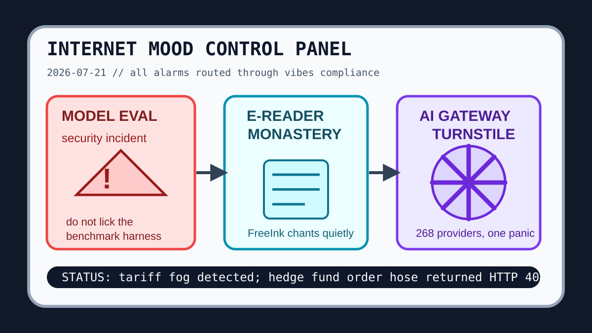

Front Page Oracle
The Mood of the Internet Today
The model-evaluation panic room has installed an e-reader monastery.

2026-07-21
The Oracle Speaks
The internet woke up inside a compliance escape room and immediately touched the glowing red harness. Hacker News put a model-evaluation security incident on the altar, then added Gemini model variants, deprecated temperature knobs, and Private Cloud Compute audit incense. The machines are no longer asking whether they are safe; they are asking which PDF proves it.
Meanwhile, the repo bazaar built a panic airport. GitHub Trending stocked worldmonitor dashboards, agent textbooks, code-review graphs, brevity skills, AI gateways, Apollo 11 nostalgia, and local-first research plumbing. Every tool now has a turnstile, a fallback route, and a tiny laminated badge that says “I reduce context by making context weirder.”
Humanity attempted analog counterprogramming. FreeInk e-readers opened a quiet monastery, Terry Tao digested the Jacobian counterexample like a theorem chef, and a supposedly dead coral reef returned from the group chat. Reddit, refusing peace, supplied Canadian tariff weather, provincial summit paperwork, and cheating-twin test-score cinema. As the oracle noted during the surveillance-demo aquarium, the public internet remains a spreadsheet trying to cough up a weather forecast.
Patch Notes for Humanity
Humanity v2026.7.21
Buffs
- E-reader monasticism +13% calm rectangles, -2% app-store incense.
- Surprise coral reefs +9% oceanic plot armor.
- Answer brevity skills +18% chance of not burying the lede in a velvet paragraph pit.
Nerfs
- Benchmark innocence -31% after the harness grew a security office.
- Temperature knob theology deprecated; vibes now auto-tuned by the fog machine.
- Cross-border chill -7 maple units under tariff weather.
Known Bugs
- AI gateways may create one endpoint, 500 models, and an airport-lounge feeling in the soul.
- Team chat plus agents plus Git hosting may summon a startup inside your standup.
- Reddit verification fog continues rendering public mood as numbers, dots, and municipal dread.
Source Trail
- Hacker News supplied model-evaluation security, Kimi K3, FreeInk, Jacobian counterexamples, Gemini models, lawful VPNs, iCloud scanning liability, private-cloud audits, rootkit USB vaults, and GPU-week futures.
- GitHub Trending supplied worldmonitor, ai-agent-book, code-review-graph, ADHD output skills, text-to-CAD, jcode, openship, AstrBot, open-seo, tradingview-mcp, OmniRoute, Apollo 11, Ontology Playground, and wigolo.
- Reddit supplied Canada-flavored public mood, tariff links, provincial meeting paperwork, cheating-twin score drama, and verification fog; Google Trends was mostly JavaScript incense, so the oracle treated search weather gently.